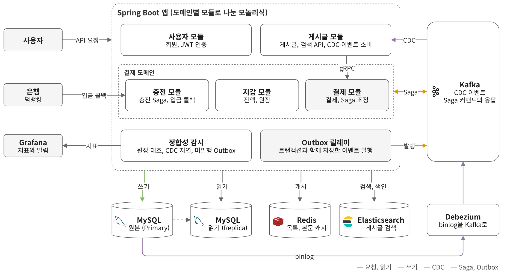
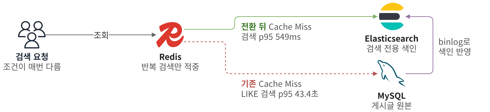
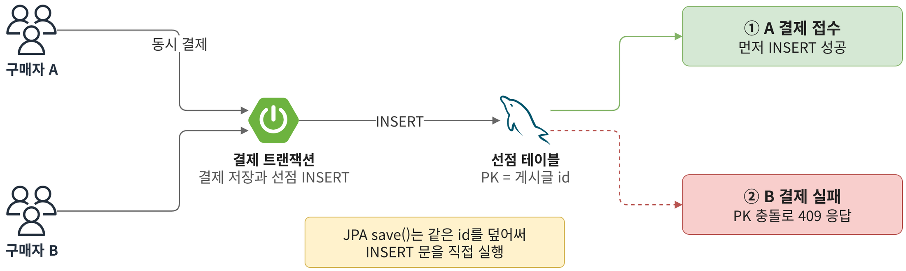
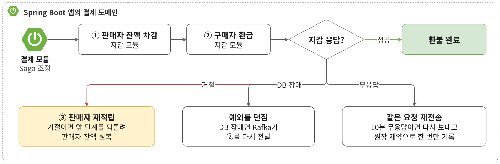

Search Platform, 게시글 검색과 에스크로 결제
중고거래 게시글 검색과 에스크로 결제를 다루는 서비스입니다. 에스크로 결제는 구매자가 낸 돈을 플랫폼이 맡아 두었다가 거래가 끝나면 판매자에게 넘깁니다. 검색은 구현을 단계마다 바꿔 가며 같은 부하로 한계를 잰 뒤 Elasticsearch로 옮겼습니다. 결제, 지갑, 충전 모듈은 Kafka 메시지로만 주고받아 한 트랜잭션으로 묶을 수 없어서 단계마다 실패하면 돈이 어디에 남는지부터 따졌습니다.
주요 성과
- 조건이 매번 다른 검색 p95549ms이전 42.7초 (커서 + LIKE)
- 같은 게시글 동시 결제새 중복 0건이전 한 게시글에 최대 41건
- 구매자 환급 실패 시판매자 잔액 복구이전 뺀 돈이 어디에도 남지 않음
- 결제별 원장 대사정산 누락 1건 발견합계 검사로는 정상
맡은 일
- 검색
- 구현 단계별 같은 부하 측정
- Elasticsearch 전환
- Debezium CDC 색인 동기화
- 결제
- 선점 테이블로 이중 판매 차단
- 환불 Saga 보상 처리
- 원장 기준 결제별 대사
- 기술

항목을 펼치면 찾은 문제와 해결 과정과 결과를 차례로 볼 수 있습니다. 그림은 누르면 크게 보입니다.
검색
구현마다 같은 부하로 한계를 잰 Elasticsearch 전환42.7초 → 549ms조건이 매번 다른 검색 p95

찾은 문제
- 게시글 500만 건에서 제목과 본문 검색, 카테고리와 지역 필터, 등록일 정렬을 하는 API. 요청의 30%는 같은 조건이 반복되고 70%는 조건이 매번 다름
- 처음엔 가상 사용자 50명이 응답을 받아야 다음 요청을 보내게 했음. 그러면 느린 구현일수록 요청이 덜 나가서 커서 + LIKE도 오류율 2.5%로 정상처럼 보임
- 그래서 측정 방식부터 바꿔 응답과 상관없이 초당 25건을 3분 동안 일정하게 보내고 구현만 바꿔 가며 측정
해결 과정
- offset 페이징은 첫 페이지에도 전체 건수를 세느라 거의 처리하지 못해 id 커서로 변경
- LIKE는 인덱스를 쓰지 못해 제목에 FULLTEXT 인덱스를 붙였지만 흔한 검색어는 일치하는 문서를 모두 모은 뒤 필터를 걸어 오히려 느려짐
- Redis 캐시는 반복 검색만 빨라지고 조건이 매번 다른 70%는 그대로
- 검색을 Elasticsearch로 분리하고 MySQL binlog를 Debezium으로 읽어 색인에 반영
- Elasticsearch가 멈춘 사이 만든 게시글이 복구 뒤에도 검색되지 않음. 연결 실패도 잘못된 메시지처럼 세 번만 재시도하고 빼 두었기 때문. 연결 실패는 될 때까지 재시도
결과
같은 데이터에 초당 25건을 3분 동안 보낸 결과입니다.
| 구현 | 성공률 | 1초 안 응답 | 조건이 매번 다른 검색 p95 |
|---|---|---|---|
| offset + LIKE | 0.3% | 0.0% | 58.7초 |
| 커서 + LIKE | 9.4% | 0.2% | 42.7초 |
| 커서 + FULLTEXT | 1.3% | 0.0% | 41.6초 |
| 커서 + LIKE + Redis | 11.4% | 5.2% | 43.4초 |
| Elasticsearch + Redis (선택) | 100% | 99.96% | 549ms |
- 조건이 매번 다른 검색 p95 42.7초 → 549ms (커서 + LIKE 대비)
- 모든 요청이 성공하고 99.96%가 1초 안에 응답
- 장애 중에 만든 게시글 10건이 복구 후 29초 안에 모두 검색에 반영
결제
결제 트랜잭션 안에서 게시글을 선점해 막은 이중 판매새 중복 0건결제 API p95 42ms

찾은 문제
- 결제 모듈이 게시글이 판매 중인지만 확인하고 상태는 바꾸지 않아 같은 게시글에 들어온 결제를 모두 받음
- 부하 시험은 처리량만 보고 있었음. 결과 데이터가 게시글 하나에 결제 하나라는 규칙을 지키는지 직접 조회해 보니 한 게시글에 결제가 최대 41건 접수돼 있었음
- 나중에 결제한 구매자의 돈도 플랫폼에 묶임
검토한 방법
| 방법 | 막을 수 있는지 | 이유 |
|---|---|---|
| 게시글 행 잠금 | 쓸 수 없음 | 게시글 테이블은 게시글 모듈 영역이라 결제 모듈이 접근하지 않음 |
| 선점 여부 조회 후 저장 | 막지 못함 | 동시에 들어온 두 결제가 둘 다 선점 없음을 보고 통과 |
| 선점 테이블 PK (선택) | 막음 | INSERT 한 번으로 DB가 확인과 기록을 함께 처리해 늦은 쪽이 바로 실패 |
해결 과정
- 게시글 id를 PK로 둔 선점 테이블에 결제와 같은 트랜잭션에서 INSERT. 두 번째 결제는 PK 충돌로 바로 실패하고 409 응답
- JPA save()는 id가 있으면 기존 행을 덮어써 충돌이 나지 않아 INSERT 문을 직접 실행
- 곧 붙일 자동 구매 확정이 선점 없이 접수된 결제까지 판매자에게 정산하는 것을 배포 전에 발견해 선점을 가진 결제만 구매 확정할 수 있게 제한
- 이미 접수된 중복 결제는 구매자 돈이 걸려 있어 데이터를 지우지 않고 취소 절차로 구매자에게 환급
결과
- 같은 부하로 결제 401건을 다시 보내 새 중복 0건과 결제 API p95 42ms를 확인
- 같은 상품 대금이 판매자에게 두 번 정산되지 않음
환불이 실패해도 판매자 돈이 사라지지 않게 한 보상 처리판매자 잔액 복구구매자 환급 실패 시

찾은 문제
- 환불은 판매자 잔액에서 먼저 빼고 구매자에게 돌려주는 두 단계
- 지갑 모듈이 모든 예외를 거절로 응답해 잠깐의 DB 장애도 되돌릴 수 없는 실패로 종결
- 결제 모듈은 거절을 3번 다시 보냈고 구매자 환급이 거절되면 판매자에게서 뺀 돈을 되돌리지 않음
- 응답이 10분 없으면 바로 실패로 닫아 늦게 처리된 돈의 이동이 결제 상태에 반영되지 않음
해결 과정
- 확정된 거절과 결과를 모르는 상태를 나눠 다르게 처리
- 잔액 부족이나 지갑 없음처럼 다시 보내도 결과가 같은 경우만 거절로 응답. 거절은 재시도하지 않고 구매자 환급이 거절되면 판매자에게서 뺀 금액을 다시 넣는 보상 실행
- 결과를 모르면 돈이 이미 움직였을 수 있어 실패로 단정하지 않음. DB 장애는 예외를 던져 Kafka가 같은 요청을 다시 전달
- 응답이 10분 없으면 보관해 둔 같은 요청을 다시 보내고 원장의 중복 방지 제약으로 한 번만 반영. 다시 보내도 응답이 없을 때만 실패로 기록
결과
- 구매자 환급을 일부러 실패시킨 E2E 테스트에서 판매자 잔액이 원래대로 돌아오는 것을 확인
- 수정 전 실패하던 판매자 잔액 부족 환불 재현 테스트가 수정 후 통과
- DB 장애에는 거절 대신 예외가 나가고 같은 요청을 다시 보내도 원장에는 한 번만 기록
합계 검사가 놓친 정산 누락을 찾은 결제별 원장 대사정산 누락 1건 발견합계 검사로는 정상
찾은 문제
- 처음 만든 정합성 검사는 지갑 잔액, 상태별 결제 건수, 전체 금액을 합계로만 비교
- 한 결제에서 기록이 빠지고 다른 결제에서 하나 더 생기면 합계는 맞아 보이고 어느 결제가 틀렸는지도 알 수 없음
해결 과정
- 돈이 움직일 때마다 남기는 원장을 기준으로 결제마다 비교
- 결제 상태마다 원장에 있어야 할 기록의 건수와 금액을 규칙으로 정의
- 처리 중인 결제는 판단에서 빼고 불일치 건수는 모니터링 지표로 기록
- 지갑 잔액과 원장 합계를 맞춰 보고 들어온 돈이 지갑과 플랫폼 보관금, 수수료를 더한 값과 같은지 보는 합계 검사는 돈이 생기거나 사라졌는지 확인하는 용도로 유지
결과
- 합계 검사에서는 정상으로 보이던 환불 정산이 빠진 결제 1건을 찾아 수정